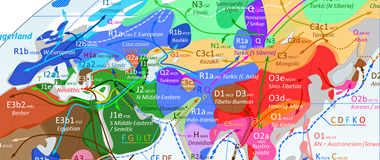

Big Data Consultant @ Hong Kong |
MA CogSci @ Lund U |
BSc CompSci @ CUHK
 |
Artificial Life — Lenia
Evolving complex mathematical lifeforms.
On the quest for open-ended evolution.
Web Demo |
GitHub Repo
Original:
Video |
Arxiv |
Journal
(appendix)
Extended:
Video |
Arxiv |
Proceedings
Talk: Stanford
(video,
slides) |
PyCon
(slides)
ALIFE 2020 |
Quine.ch |
ALife Twitter
|
|
 |
Artificial Intelligence
Human learning machine learning human.
AI/ALife Glossary
HANet with TF2 |
Draft
|
|
|
Typeface Design — Geometrika
Crafting the first East Asian geometric typeface.
Minimalist design for the future.
Official Book |
Making of
|
|
|  |
Scientific Infographics
Visualizing intricate ideas.
Summarize, communicate, speculate.
Sir David |
Human Blueprint
Y-DNA World Map |
Metabolism Metro
|
|